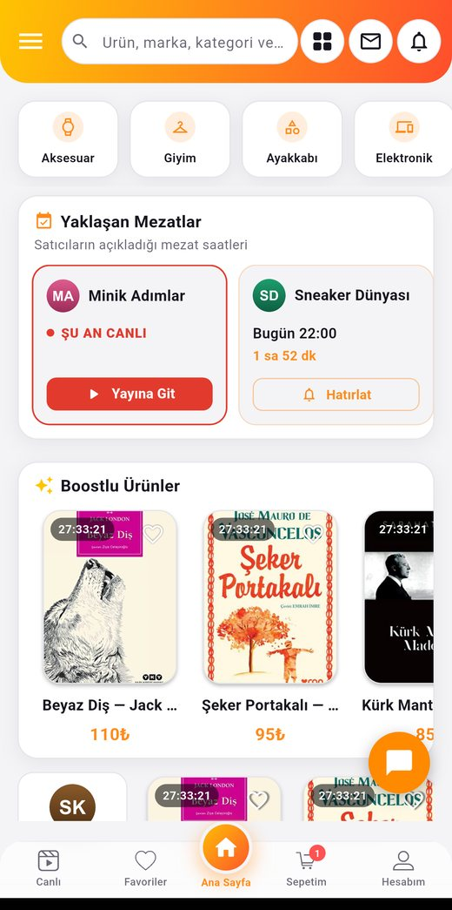

Dakika dolmadan,
ALDIM de!
Yeni nesil mezat burada. Satıcılar ürünlerini süreli mezata çıkarır; sen beğendiğini tek dokunuşla anında satın alırsın.
Kurulumda "bilinmeyen kaynaklara izin ver" onayı gerekebilir.

Alışverişin en heyecanlı hali
Sosyal medyadaki dağınık ve güvensiz canlı satışlara son. Zamanlı, hızlı, düzenli ve güvenli mezat — tek uygulamada.
Tek dokunuş: "Aldım"
Adres ve ödeme bilgilerin hazır. Beğendiğin ürünü tek tıkla anında satın al.
Süreli mezat çarkları
Ürünler 5 dakikalık, 1 saatlik, günlük veya haftalık mezatta. Süre dolunca kalkar — fırsatı gören kapar.
Güvenli ödeme
Ödemen ürün eline ulaşana kadar güvence altında. Önden havale yok, güven sorunu yok.
Canlı yayında mezat
Satıcı ürünü kamerada gösterir; mağaza puanları ve yorumlarla kimden aldığını bilirsin.
Nasıl çalışır?
Üç adımda mezat heyecanı.
Satıcı ürünü yükler
Görseller, adet ve beden önceden girilir. Alıcı her bilgiye anında ulaşır; satıcı aynı soruları tekrar tekrar cevaplamaz.
Mezat süresi başlar
Ürün seçilen slotta satışa çıkar ve geri sayım başlar. Süre dolunca otomatik yayından kalkar.
"Aldım" de, bitti
Kayıtlı bilgilerinle tek dokunuşta satın al. Ödemen ürün eline ulaşana kadar güvencede.
Kurumsal
Hakkımızda
ALDIM, sosyal medyadaki dağınık ve güvensiz canlı yayın satışlarına düzen getiren, Türkiye merkezli yeni nesil mezat platformudur. Satıcılar ürünlerini süreli mezatlara çıkarır; alıcılar tek dokunuşla, "Aldım" diyerek güvenle satın alır.
Türkiye'de sosyal ticaret hızla büyüyor; ALDIM, canlı mezat yapan binlerce satıcıyı ve milyonlarca izleyiciyi tek bir güvenli çatı altında buluşturmayı hedefliyor.
İletişim
- Destek: destek@aldimmezat.com
- Kurumsal: info@aldimmezat.com
Teslimat ve İade Koşulları
Siparişleriniz, satıcı tarafından anlaşmalı kargo firmaları aracılığıyla adresinize gönderilir. Teslimat süresi genellikle 1-5 iş günüdür.
6502 sayılı Tüketicinin Korunması Hakkında Kanun ve Mesafeli Sözleşmeler Yönetmeliği uyarınca, teslim tarihinden itibaren 14 gün içinde cayma hakkınızı kullanarak ürünü iade edebilirsiniz. İade edilen ürün bedeli, ürünün satıcıya ulaşmasının ardından ödeme yönteminize iade edilir.
Gizlilik ve KVKK
Kişisel verileriniz, 6698 sayılı KVKK kapsamında; üyelik hesabınızın oluşturulması, siparişlerinizin işlenmesi, teslimat süreçlerinin yürütülmesi ve yasal yükümlülüklerin yerine getirilmesi amaçlarıyla sınırlı olarak işlenir.
Verileriniz; kargo şirketleri, ödeme kuruluşları ve barındırma hizmeti sağlayıcılarıyla yalnızca hizmetin gerektirdiği ölçüde paylaşılır, üçüncü kişilere satılmaz. KVKK m.11 kapsamındaki haklarınızı iletişim adreslerimiz üzerinden kullanabilirsiniz.
Mesafeli Satış Sözleşmesi
Uygulama üzerinden verilen tüm siparişler, sipariş onayı öncesinde alıcıya sunulan mesafeli satış sözleşmesine tabidir. Sözleşme; satıcı ve alıcı bilgilerini, ürünün nitelikleri ile vergiler dahil toplam fiyatını, ödeme ve teslimat bilgilerini ve cayma hakkına ilişkin koşulları içerir. Ödemeler, lisanslı ödeme kuruluşu aracılığıyla güvenli şekilde alınır; kart bilgileriniz uygulamada saklanmaz.